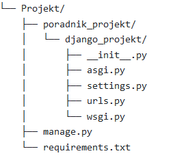
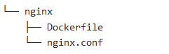

Docker - Django - Postgres - Nginx
Poradnik w ramach którego przedstawie kroki konfiguracji Django działającego na Dockerze wraz z Postgresem. Dla środowiska produkcyjnego dodany zostanie serwer HTTP - Gunicorn, oraz serwer proxy - Nginx wraz z obługą plików statycznych i multimedialnych.
Tworzę virtualne środowisko za pomocą wenv, aby odizolować się od systemu. Pojawienie się nazwy środowiska (env) przed ścieżką oznacza pomyślne uruchomienie:
Będąc już w środowisku instaluję Django, tworzę projekt oraz wykonuję migrację:
W tym momencie po wpisaniu w przegląrce adresu http://localhost:8000/ poiwnien pokazać nam się ekran startowy Django. Po wyłączeniu serwera (ctrl + C) możemy usunąć wirtualne środowisko. Potrzebny będzie plik tekstowy requirements.txt, w któym przechowywane będą zależności potrzebne do zainstalowania w obrazie Dockera, aktualnie wpisuje tam tylko Django. Natomiast struktura folderów powinna wyglądać następująco: 
Z strony Dockera pobieramy oprogramowanie. W folderze poradnik_projekt tworzę plik Dockerfile:
W pliku tym zaczynam od obrazu Dockera z Pythonem, ustawiam katalog roboczy (WORKDIR), zmienne środowiskowe (ENV), instaluje zależności z pliku requirements.txt oraz kopiuje projekt Django. Następnie w katalogu głównyn (Projekt) tworzę plik docker-compose.yml :
web:
build: ./app
command: python manage.py runserver 0.0.0.0:8000
volumes:
- ./app/:/usr/src/app/
ports:
- 8000:8000
env_file:
- ./.env.dev
W pliku settings.py trzeba zaaktualizować SECRET_KEY, DEBUG oraz ALLOWED_HOSTS. Ważne aby u góry pliku zaimportować moduł "os".
Następnie w pliku głównym projektu należy utworzyć plik ".env.dev", w którym będą przechowywane zmienne środowiskowe:
W tym momencie możemy już stworzyć obraz Dockera oraz uruchomić kontener:
Aby skonfigurować Postgres musimy dodać nową usługę w pliku docker-compose.yml,
zaaktualizować ustawienia Django oraz zainstalować Psycopg2 w obrazie Dockera.
Zaczynam od edycji pliku "docker-compose.yml", w którym dodaje usługę o nazwię "db":
web:
build: ./app
command: python manage.py runserver 0.0.0.0:8000
volumes:
- ./app/:/usr/src/app/
ports:
- 8000:8000
env_file:
- ./.env.dev
depends_on:
- db
networks:
- baza-net
db:
image: postgres:13.0-alpine
volumes:
- postgres_data:/var/lib/postgresql/data/
environment:
- POSTGRES_USER=hello_django
- POSTGRES_PASSWORD=hello_django
- POSTGRES_DB=hello_django_dev
networks:
- baza-net
volumes:
postgres_data:
networks:
- baza-net:
Edytuje ustawienia bazy danych w pliku konfiguracyjnym Django "setting.py":
"default": {
"ENGINE": os.environ.get("SQL_ENGINE", "django.db.backends.sqlite3"),
"NAME": os.environ.get("SQL_DATABASE", BASE_DIR / "db.sqlite3"),
"USER": os.environ.get("SQL_USER", "user"),
"PASSWORD": os.environ.get("SQL_PASSWORD", "password"),
"HOST": os.environ.get("SQL_HOST", "localhost"),
"PORT": os.environ.get("SQL_PORT", "5432"),
}
}W pliku "Dockerfile" dodaje instalację wymaganych paczek dla Psycopg2:
Buduję teraz obraz, który połączy dwa kontenery oraz wykonam migrację:
echo "Czekam na postgresa..."{
while ! nc -z $SQL_HOST $SQL_PORT; do
sleep 0.1
done
echo "PostgreSQL wystartowal"
Dodaję zmienną środowiskową DATABASE do pliku ".env.dev":
Należy teraz poleceniem "$ docker-compose up -d" przebudować obrazy i uruchomić kontener. Sprawdzić czy aplikacja działa poprawnie pod adresem http://localhost:8000/.
W celu stworzenia środowiska producyjnego musimy dodać do pliku requirements.txt "Gunicorn". Ponieważ w rozwoju aplikacji wciąż chce korzystać z wbudowanego serwera Django, na potrzeby produkcji tworzę nowy plik compose o nazwie "docker-compose.prod.yml":
web:
build: ./app
command: gunicorn hello_django.wsgi:application --bind 0.0.0.0:8000
ports:
- 8000:8000
ports:
- 8000:8000
env_file:
- ./.env.dev
depends_on:
- db
networks:
- baza-net
db:
image: postgres:13.0-alpine
volumes:
- postgres_data:/var/lib/postgresql/data/
env_file:
- ./.env.prod.db
networks:
- baza-net
volumes:
postgres_data:
networks:
- baza-net:
Jak widać w "command" używam już Gunicorna, a nie serwera developerskiego Django. Usunąłem również wolumin z usługi sieciowej, ponieważ nie jest on potrzebny w produkcji. Zmienne środowiskowe wczytuję z osobnych plików, które należy teraz stworzyć:
.env.prod:
.env.prod.db:
Usuwam kontenery developerskie wraz z woluminami (flaga -v):
Buduję obrazy produkcyjne i uruchamiam kontenery:
Należy teraz przetestować stronę administracyjną Django pod adresem http://localhost:8000/admin. Zgodnie z oczekiwaniem nie powinna posiadać styli, ponieważ pliki statyczne nie są już ładowane, rozwiązanie tego problemu pokaże później.
W fazie rozwojowej przy każdym uruchomieniu wykonujemy polecenie flush database (czyszczenie bazy) oraz migrate. W fazie produkcyjnej nie chcemy aby tak się działo, dlatego tworzę nowe pliki entrypoint:
entrypoint.prod.sh:
echo "Czekam na postgresa..."{
while ! nc -z $SQL_HOST $SQL_PORT; do
sleep 0.1
done
echo "PostgreSQL wystartowal"
Tworzę nowy plik Dockerfile o nazwie "Dockerfile.prod", który będzie używany w wersji produkcyjnej:
Należy teraz zaaktualizować plik "docker-compose.prod.yml", aby usługa sieciowa była budowana z pliku "Dockerfile.prod":
build:
context: ./app
dockerfile: Dockerfile.prod
command: gunicorn hello_django.wsgi:application --bind 0.0.0.0:8000
ports:
- 8000:8000
env_file:
- ./.env.dev
depends_on:
- db
networks:
- baza-net
Następnie wykonać:
Zaczynam od dodania serwisu do pliku "docker-compose.prod.yml":
build: ./nginx
ports:
- 1337:80
depends_on:
- web
W głównym folderze projektu tworzę poniższe foldery i pliki: 
Dockerfile:
nginx.conf:
server web:8000;
}listen 80;
location / {
proxy_pass http://hello_django;
proxy_set_header X-Forwarded-For $proxy_add_x_forwarded_for;
proxy_set_header Host $host;
proxy_redirect off
}
}Aktualizuję usłguę "web" w pliku docker-compose.prod.yml, zamieniając porty na expose"
build:
context: ./app
dockerfile: Dockerfile.prod
command: gunicorn hello_django.wsgi:application --bind 0.0.0.0:8000
expose
- 8000
env_file:
- ./.env.dev
depends_on:
- db
networks:
- baza-net
Aby przetestować czy wszystko działa poprawnie należy utworzyć nowe obrazy i wykonać migrację: